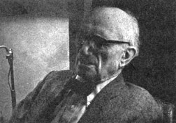
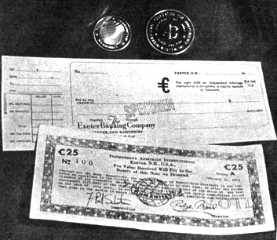
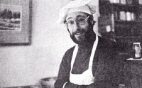

The Borsodi Constant An Inflation-Free Currency
May/June 1974
Dr. Ralph Borsodi (see the Plowboy Interview in MOTHER NO. 26) is chiefly famous for his successful experiments in self-sufficient living. There's another side to the man, however, that is of increasing importance in this time of runaway prices: his long-term interest in inflation, its causes and cures.
To be downright blunt about it, Borsodi does not believe that a steadily shrinking dollar (or yen or mark or franc or whatever) is quite the "accident" that politicians usually make it out to be. Quite the contrary. In his view, governments cynically and stupidly debase the purchasing power of their currencies on purpose by printing too much paper money. Why? Because modern politicians and the economists who advise them are-in the main-rather weak-willed animals who lack either the power or the fortitude to run a country on a strictly pay-as-we-go basis.
"It wasn't always this way," Borsodi points out. "During most of the last century, the majority of economists preferred gold and silver or currencies that were solidly backed-unit for unit-by such real wealth. The prevailing doctrine among those economists was that the worst possible kind of money was 'printing press' money . . . currency backed by nothing except the word of the government which issued it. They called this fiat money. They didn't have much regard for it.
"All right. Along came John Maynard Keynes. He was a very influential economist in England from about 1915 to 1946 and he invented the idea that we can insure prosperity by 'controlled inflation'.
"Keynes' theory, you see, is that a government can steadily expand a country's economy, even during periods of what would otherwise be a recession or depression, by pumping a little 'extra' money-a little printing press currency-into circulation.
"Now Keynes knew that this would dilute the purchasing power of every unit of money already in circulation. If you have more units of money trying to buy the same amount of goods and services, you know, prices inevitably go up. You have inflation.
"Keynes was willing to accept this debasement of currency, however, because he thought that a government could inflate its currency just a little bit and just once. Then, as the Good Times began to roll in that country once more, the government could stop pumping the extra units of money into the nation's economy.
"Well that was a nice thought, but politicians don't seem to work that way. Planned inflation is just like planned drug taking. It doesn't work. You always need a bigger 'fix' the next time around. Politicians have never stopped inflating a country's currency once they've begun. Quite the contrary. They just keep on giving a nation's money supply a bigger and bigger shot in the arm until the whole situation runs away with itself. And that's what's happening on a global scale right now."
Borsodi traces the planet's current financial problems to the International Monetary Conference held in Bretton Woods, New Hampshire in July of 1944. Keynes' inflationary philosophy was adopted on an international scale at that meeting and, as a result, is universally accepted by heads of state and their advisors today. Dr. Borsodi, on the other hand, was not impressed by the idea then and he remains unimpressed by it now.
"I like what I call 'rational systems of money'. I liked then in 1944 and I still like them today. Fiat money is not rational and Keynes' philosophy of economic growth can lead only to fiat currency."
The Bretton Woods conference disturbed Dr. Borsodi so deeply that he soon wrote a small paperback in which lie prophesied what are substantially the economic problems that we're experiencing right now. The booklet, published in 1948 by The School of Living, was titled Inflation is Coming and What to Do About It. Despite the fact that the publication sold nearly half a million copies, however, few individuals in positions of power seem to have read it or to have heeded Borsodi's warnings.
And so we find nearly every nation in the world frantically trying to run up . . . an increasingly rapid down escalator of debased currency. It costs more and more every day, in other words, just to stay even than it did the day before. During the 28 years from 1945 to 1973, the value of the United States dollar depreciated by a good two-thirds . . . and a 1974 dollar has shrunk an additional 10%. And there's no end to the madness in sight. "If we continue this foolishness," says Borsodi, "we're eventually going to witness a debacle followed by a depression worse than that of the 1930's."
Dr. Borsodi was more or less content to write and talk about the problem until the U.S. dollar was devalued in 1971. He and his wife were visiting a health resort in southern California at the time and Borsodi was researching a book in the Escondido library when he picked up a newspaper and read of the devaluation. The book was forgotten. Borsodi says, "I began to wonder what would happen if, instead of writing another book about inflation, I were to try to issue a currency that would be inflation-free."
When he returned to his Exeter, New Hampshire home, Borsodi began discussing his idea with the officers of all the banks in town. He also wrote to the head of the Federal Reserve System and talked for hours with Federal Reserve representatives in Boston. Borsodi was very open about what he intended to do and he took the stand that, while the United States Constitution forbids the counterfeiting of this nation's currency, it in no way limits the minting or circulation of a completely alternative medium of exchange.
Although no one particularly agreed with Dr. Borsodi, no one disagreed with him either. He now says, "I think they probably said to themselves something like, 'Oh well, let the old man go ahead. He can't do anything much up there in Exeter.' I think this is the attitude they probably took toward the whole affair."
And go ahead he did. Borsodi figured that if it was a good idea to back a currency with gold and silver, it'd be an even better idea to back it with a whole market basket of commodities.
That is, if certificates were printed and distributed with the guarantee that they'd always be 100% redeemable in fixed amounts of, say, 30 of the world's most widely used resources . . . those certificates would automatically increase in value as the value of the resources increased (in terms of constantly degraded national currencies). Whereas a dollar will now buy less than one-third as much gold or wheat or silver or iron or tin or cotton or copra as it bought in 1945 . . . such a certificate (which is issued with the guarantee that it will always be exchangeable for a fixed amount of all these goods) will, by definition, perpetually buy the same amount of gold or wheat or silver or iron or tin or cotton or copra. Year after year after year after year.
By issuing a certificate firmly based on real wealth , in other words-instead of politicians' empty promises-Borsodi thought he could create a medium of exchange that would be inflation-proof . . . or "constant". And he decided to call his new currency just that . . . the constant.
Does the idea work? Well, Borsodi presented his thoughts to a number of people who-over a period of about three years-have "deposited" a total of approximately $100,000 in something called the Arbitrage International "bank". (Deposits and withdrawals can be made by an individual at any time just as if he or she were dealing with a real bank, and all monies are fully protected by the Federal Deposit Insurance Corporation.) The funds, in turn, have been used to buy and sell Borsodi's 30 basic commodities on the world market.
Result: The pioneers in the experiment have seen their constants rise in value (in relation to the dollar) a whopping 17% in just three years. Or, to put it the other way around, a constant bought in 1970 can still be traded for exactly one constant's worth of goods . . . while a dollar will now buy only 85% of what it would purchase three years ago.
Borsodi next took his idea one giant step further by minting something he calls a globe. As Keith Dewey-a young man who has helped Dr. Borsodi found his alternative currency-says, "We can't call them coins because that's against the law and we refuse to call them medallions so we call them globes. They're the missing link between absolute barter and trading. They have no labels on them. No dollar sign or cent sign, and no constant sign. All it says on a globe is that the piece of metal contains either one-half ounce or a full ounce of .999 fine silver. A globe, in other words, is a very convenient barterable item. You can't keep wheat in your pocket and you can't keep a fish in your pocket but you most certainly can keep a globe-which has a real worth of its own-in your pocket. And that real worth, by the way, remains constant. No matter what a dollar bill will buy on any particular day, a globe will always purchase exactly its weight in silver-and a corresponding amount of any other commodity-because a globe is silver."
(Interestingly enough, the globe has been worth more than its weight in silver from the first day the first globe was minted. On top of its real worth, many people see a certain collector's value in the "coin" . . . and other individuals have been pleased to purchase globes at a premium price in order to help Borsodi finance his new currency. When silver was selling for $3.25 an ounce, for example, the going rate for a one-ounce globe was $7.00. Now that silver is priced at more than $6.00 an ounce, the same "coin" sells for $10.00. And, of course-in the finest tradition of barter-the half-ounce or ounce chunks of metal are also worth exactly what wants, needs or desires make them worth on any given day . . . as evidenced in the sidebar that accompanies this article.)
So OK. So Dr. Borsodi seems to have accomplished exactly what he set out to do. So where does he go from here?
Now that the initial test of his idea is over, Borsodi (who is nearing 90) has handed most of the responsibility for his alternative currency over to younger men . . . who are in the process of scrapping the prototype setup and establishing a truly international alternative medium of exchange.
A limited partnership has been formed and is now conducting experiments to determine the ideal "commodity index" to use for backing the constant. Until the final selection is made, constants are temporarily no longer being issued. (Globes, however, are still available at a price of $10.00 for an ounce piece and $5.00 for a half-ounce strike from Arbitrage International, Exeter, New Hampshire.)
The people currently working on Borsodi's concept hope to be able to set up a public corporation by fall. At that time, debentures will be issued by the corporation for funds received. That is: You will be able to pay dollars or any other national currency for Arbitrage International debentures. Your money will then be invested in commodities or guaranteed contracts for commodities . . . and the goods will be used to give a stable value to the certificates (the debentures) you hold. Owners of constants will be able to redeem their holdings in their own national currency at any time. Holders of constants will also be able to exchange those holdings for commodity contracts on which they can then take delivery, or which they can sell on the open market for some other national currency.
This activity will be coordinated out of a bank which will be established in Luxembourg (Arbitrage International already maintains both a Luxembourg and a London office, in addition to its temporary headquarters in Exeter, New Hampshire.) If all goes well, it is hoped that the Luxembourg bank will eventually prove a boon to developing nations by granting self-liquidating, interest-free loans to such commodity-exporting (exploited) countries. This will raise the standard of living in the poorer areas of the planet and encourage international trade.
And it will do one thing more: Give little people the world over a safe port against the tidal wave of inflation that threatens to engulf us all.

And how does the constant work in actual practice? Rick Perry gives a brief account of the intertwined history of ...
GREEN EARTH, THE LOAF AND
LADLE, THE CONSTANT AND
THE GLOBE
The first thing I knew about the constant was when Dr. Borsodi came into my shop, the Green Earth natural foods store on Water Street in Exeter, New Hampshire. Jerry Rooney and I own it. Dr. Borsodi said, "Would you pass out these pamphlets about the constant to your customers?"
And I said, "Sure. What are they? What is it ?"
And he said, "Well, it's a new currency." He put it in such a simple way that I'll never forget. He said, "It's a currency based on real commodities such as rice and wheat and cotton and iron."
You know, that made sense.
Then he said, "This will enable the constant to be stable because as the prices of these commodities go up, the price of the constant will likewise go up."
And that made a lot of sense.
Dr. Borsodi really got me interested. In fact, my wife and I opened a checking account with Arbitrage International shortly after that. It was as easy as starting a checking account with the average bank . . . we filled out the same kinds of forms, we could make withdrawals in dollars instead of constants any time we wanted to and our deposit was fully insured.
Green Earth and our restaurant-the Loaf and Ladle-were two of the first businesses in Exeter where you could trade in constants.
In the Loaf and Ladle I've got a constant and a silver globe posted up over the cash register. That particular globe was the first one to ever be taken in barter, which is its ideal function. One person came into the restaurant and bought three meals with it. And we went back and forth. I said, "Let's see, I know silver's worth $3.25 an ounce today, but I know you paid $7.00 to get that globe, so I'll give you $5.00 worth of food for it."
So he bought $5.00 worth of meals. I did $5.00 because I knew that if I took it back to Arbitrage International and told them what I'd done, they'd give me $5.00 for it. And the constant up there over the cash register is the first one that anybody spent in the restaurant.
As a matter of fact, the Loaf and Ladle might never have gotten started in the first place if it hadn't been for the constant. My wife, Kerry, and I wanted to open a good food restaurant, a place where we could cook food that was good for people . . . not necessarily organic or natural but just the best you could get of what we wanted to serve. And what we wanted to serve was homemade soups and breads and desserts . . . and salads using a lot of natural things like sprouts and high-protein combinations.
Now I've done a lot of work in restaurants and know the ropes as far as managing one and getting the equipment and setting it up and stuff, but nobody thought that a "soup kitchen" could be successful in this area.
Well, in February of '73 we got a loan of $1,500 from Arbitrage International to get the Loaf and Ladle started. Now this was before the new currency was actually minted. It wasn't minted until June of last year. But the Institute put the money into our checking account in dollars and then, later on, we paid our loan installments back in constants. It worked out really great because Dr, Borsodi wanted somebody to go through that loan phase with his new currency, and we needed the money . . . so we were actually helping each other. And the restaurant has been a great success right from the beginning. It worked out really well.
As far as the alternative money system goes, the constant is so good that the only thing keeping it from working for everyone right now is that the government wouldn't go for it. It defeats the government's whole purpose. They wouldn't be able to print money any time they wanted to: they wouldn't be able to manufacture money out of thin air.
Rick Perry
Exeter, N.H.
"The silver globe on today's market is valued at over $6.00
|
 And how does the constant work in actual practice? Rick Perry gives a brief account of the intertwined history of ... |
 |
 |